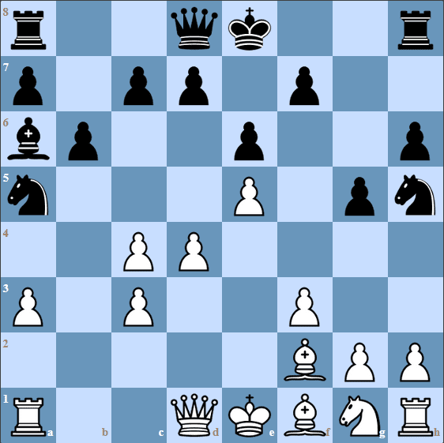

Of course, if you misplay the opening, you might never make it to the middlegame, never mind the endgame. This fact makes learning openings important.
Learning the endgames helps you decide on a strategy for the opening and middlegame. Now we know endgames are essential as well.
When asked which are more important openings or endgames? What we really need to decide is which one is more important? The only way to answer this question is to clarify the different roles the opening and endgame play in chess.
The best guide to choosing between studying openings or endgames is the time you devote to each. You do not have to choose between openings or endgames but can study both.
Before we can choose to focus on either openings or endgames we need to learn more about the role each plays in chess.
There are many different chess openings, but they all have the same goal, no matter what they are called. Yes, every chess opening has the same purpose. The opening aims to get you to a middlegame you are comfortable playing. No matter the current trend in openings or how favorably your chess engine rates the middlegame position, it will not help you if you feel uncomfortable playing it. The last thing you need is to make playing chess uncomfortable instead of fun. Take comfort in knowing that if you feel comfortable playing an opening, you will find a way to make it playable.
Your most important task is to deepen your understanding of your chosen chess opening. Playing through games of the top players will help you get a feel for the arising middlegame and endgame positions. Suppose you are looking for a good defense against 1.d4 and are considering the Nimzo-Indian Defense. In your early research, you read the Samisch variation is a critical test of the Nimzo-Indian Defense because it leads to white getting the bishop pair in exchange for a pawn weakness. Now you begin to learn about what Black gets in return? Are the doubled pawns enough of a weakness to compensate for giving up a bishop? How do you attack the doubled pawns? How does White defend them? These questions are answered by playing through games, and you don’t need to memorize any lines. Before you memorize any lines, your understanding of the opening has deepened. Instead of trying to learn variations, you know how to attack the doubled-pawns. You will place a bishop on a6, a knight on a5, and a queen on c6 or a5. Even if you forget your theory, remembering where the pieces go will help you find the right moves.
 A Typical Position in the Nimzo-Indian Samisch Variation